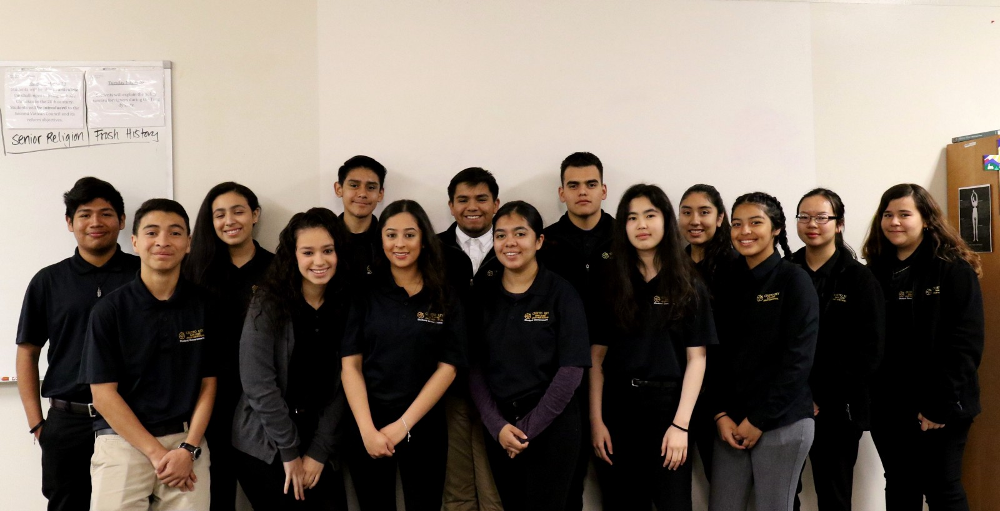
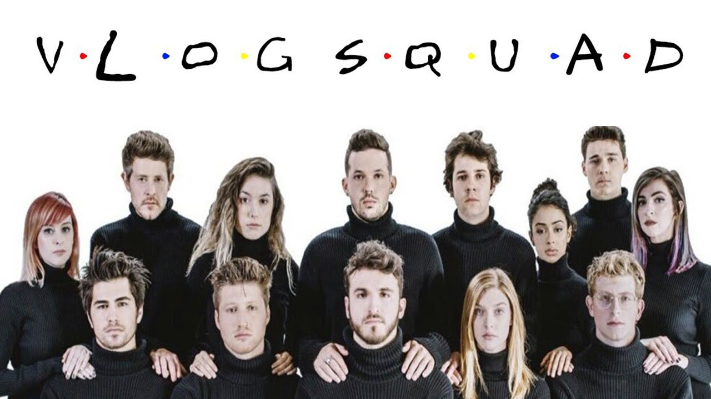
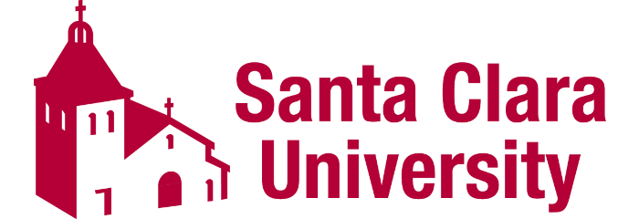
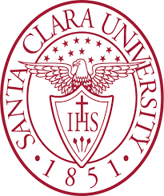

My name is Reanna Ramirez and have lived in San Jose for all of my life. I will be an incoming Junior in the fall. My school is Cristo Rey San Jose Jesuit High School which is located in downtown SJ. I love spending time with my family. I also am very passionate about social justice in my community, I have attended many immersion trips to help better understand the social injustices of my community. The university I hope to attend is Santa Clara University which is also a private Jesuit school.
Memoral Moment: I played at AVAYA STADIUM w/ my school soccer team!

Likes: Playing soccer and social justice
Fav Subjects: Religion, Science
Clubs: Student Government, Social Justice Club & M.Y. Club(Creator)
Fav App: Youtube: I enjoy watching funny videos, my favorite youtuber being David Dobrik.
Goals: Attend SANTA CLARA University
